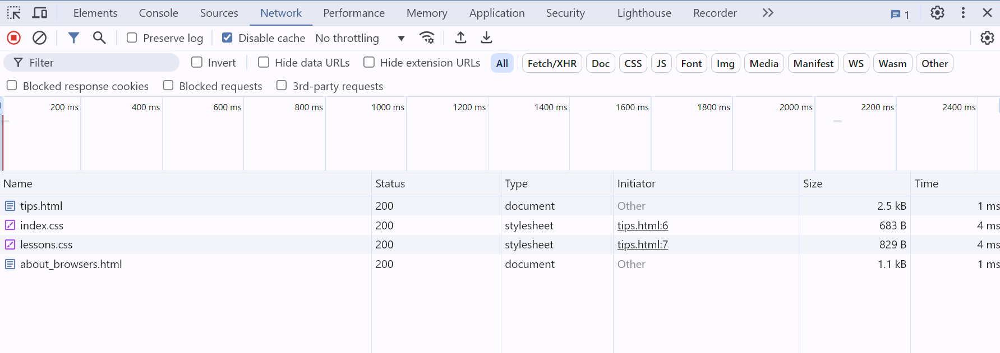
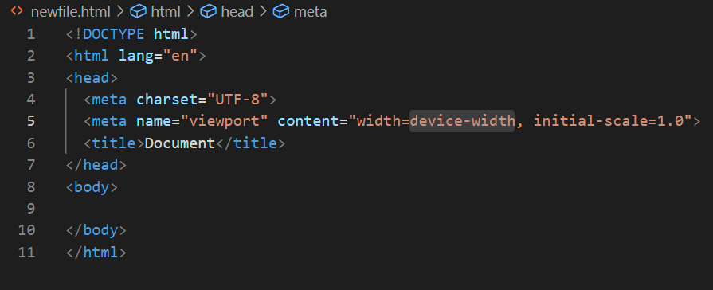

The simplest explanation of browsers are that they are applications that allows users to interact with data based on said data and embedded instructions that explain how various UI elements are supposed to work within the context of that data. A more complex description of browsers are that in general a browser consists of the following parts:
You can see what is happening behind the scenes in a browser when it has a document opened by pressing <Ctrl+Shift+i> (give it a try now). This is the developer tool window. There is a wealth of information available here for you to use. Using the Chrome browser as a reference, you shoud see something like this:
Here's a rundown on some of the tabs:
There are other tabs but the ones I've listed are the ones you will use most often.
To get some idea of what a browser is doing try this: Enter a the location of a directory and not a file into the address bar. Browse around your filesystem. Click on different file types and see how (or if) your browser displays it.
HTML is the markup language most used to create web pages. They are typically stored on servers and sent to clients (i.e. browsers) who request them via the HTTP protocol, though you can also view an html document by 'requesting' a local file in your browser in it's address field.
The easiest way to see the most basic, required parts of a complete HTML document are to generate one from a template in VSCode. To do this, create a new file with a .html extension in a VSCode project. Open the new, blank file and press the ! key and <Enter> and it will create a boilerplate HTML page for you:
There is a lot to say about HTML and how to use it. I'll just mention a (very) few here and leave the rest up to you to research as you need.
CSS stands for Cascading Style Sheets. The Cascading part refers to the fact that css elements are attached to HTML tags and every HTML from that tag and all of it's children will have the same css attached to them by default. The simplest way to 'turn off' css in a child HTML element is to give that element css settings of it's own.
A good resource for CSS is W3 Schools.
A few things to consider about CSS:
<p style="color:red;">This is a paragraph.</p>
produces this:This is a paragraph
In a new file (i.e. mystyle.css)
h1 {
margin: 0px;
padding: 1em;
}
.myFooter {
position: fixed;
bottom: 0;
background-color: #F1F1F1;
min-width: 100%;
padding-left: 15px;
}In a css file with that, any h1 tag will automatically have a margin of 0 pixels and padding of 1em. Also any tag that you give the class="footerClass" attribute to will have the styles listed above. You would use that like this:
<head>
<link rel="stylesheet" href="mystyle.css">
</head>
<body>
<footer class="myFooter">stuff in footer</footer>
</body>
<head>
<style>
body {
background-color: linen;
}
h1 {
color: maroon;
margin-left: 40px;
}
</style>
</head>
And it is used in exactly the same way in your HTML tags as in the External Style example above.
JavaScript is front (client side) and back end (server side) language that is ubiquitous and pretty much disliked by everyone who has experince with it and is being honest with themselves. In my opionion it has reached the stage of evolution where it's complexity coupled with an overwhelming array of libraries are starting to make people select other options for interactivity in web pages. That said, it is deeply embedded in so many places that wholesale removal of it is impractical and a huge number of developers know the language making it an attractive choice for companies looking for a large talent pool. So it ain't goin' anywhere soon (keep an eye on PHP though). Turning away from JavaScript will take a long time (thus, it's still a good skill to pick up and use).
The language can be run in the front-end (client side) in browsers or on the back end (server side) under NodeJS (most popular), Deno, Next.js, Meteor and a few other environments. Initially, I would recommend focusing your studies on front-end JavaScript and not dive into any back end work until you have a good command of the language. After getting very aquainted with JavaScript, it would be a good idea to eventually step up to use TypeScript instead of JavaScript. Stated simply, TypeScript is JavaScript with syntax for types. JavaScript is TypeScript. You can change the file extension of a JavaScript file, .js, to the extension of a TypeScript file, .ts, and all or most of your JavaScript file should work fine. Some of the 'features' of JavaScript that cost you hours of debugging will be remediated by using TypeScript insted. However you must know JavaScript pretty well in order to understand what TypeScript is doing or it will throw exceptions at you that you will never be able to work out. So study JavaScript, get good, move on to TypeScript.
You can either embed JavaScript in an HTML file or import it into an HTML from it's own native JavaScript file. You can run JavaScript commands directly in a browser to check and see how they work (pretty cool actually). There is so much to say about JavaScript that I'll leave it up to you to find good tutorials on them.